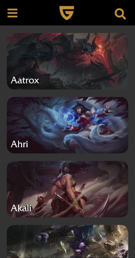
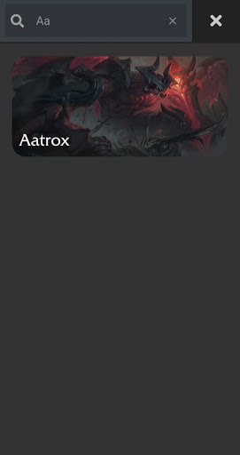
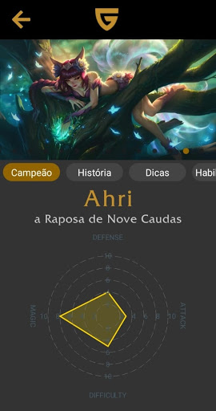
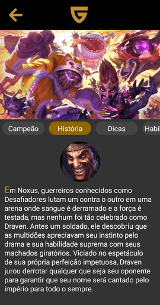
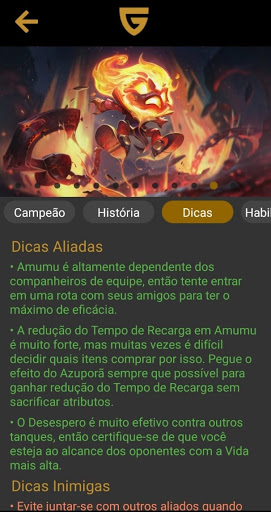
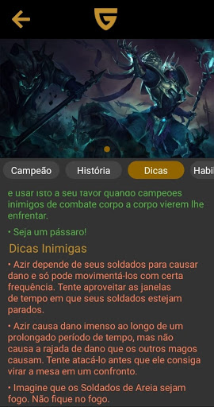
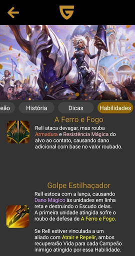
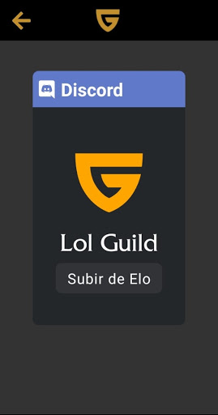

Pocket Lol Guide
PlayStore App








O Pocket Lol Guide foi um aplicativo que fiz para a PlayStore. Nele é possível encontrar guias de campeões, itens, runas e feitiços do jogo League of Legends. Além disso, o aplicativo conta com um gráfico de personalidade do campeão em questão de defesa, ataque, dificuldade e magia para o usuário saber se o campeão se encaixa no seu estilo de jogo. O aplicativo contém a história do campeão, suas habilidades, dicas de como jogar com ele e contra ele.
O sistema foi feito com as tecnologias do React-Native.